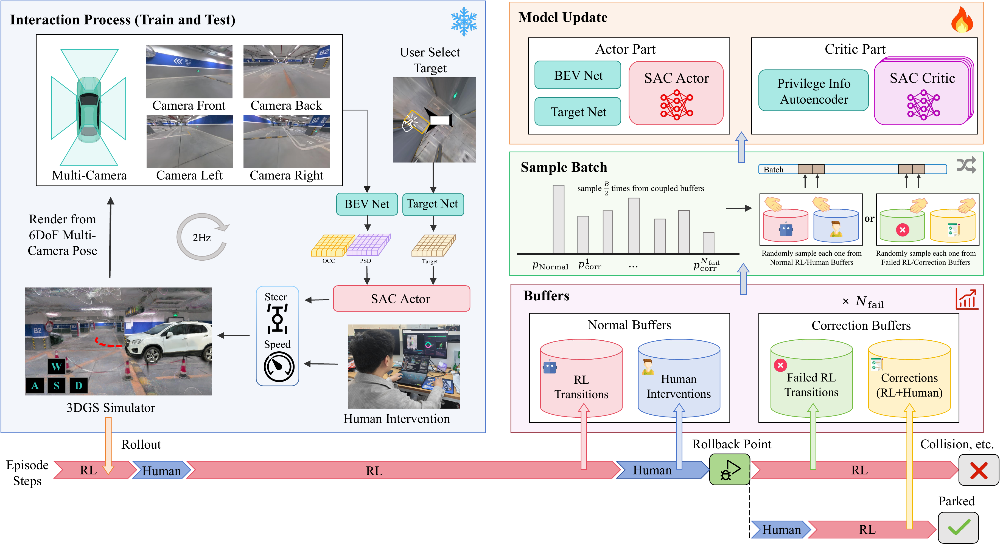
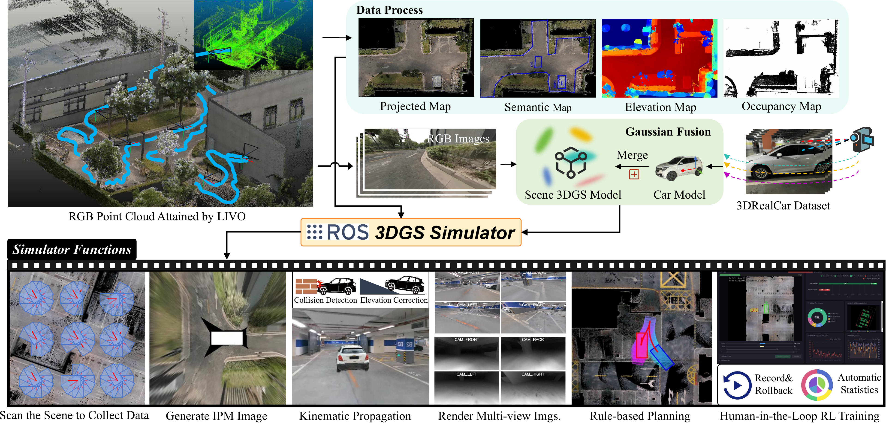
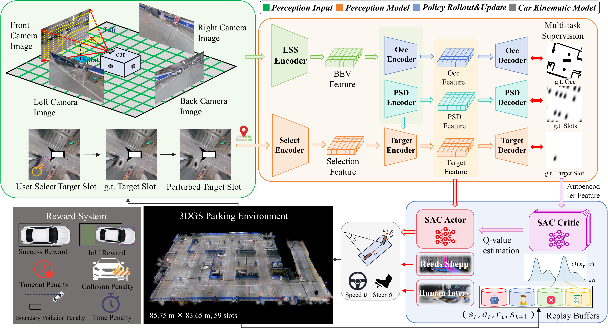
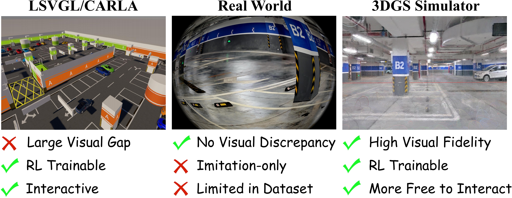
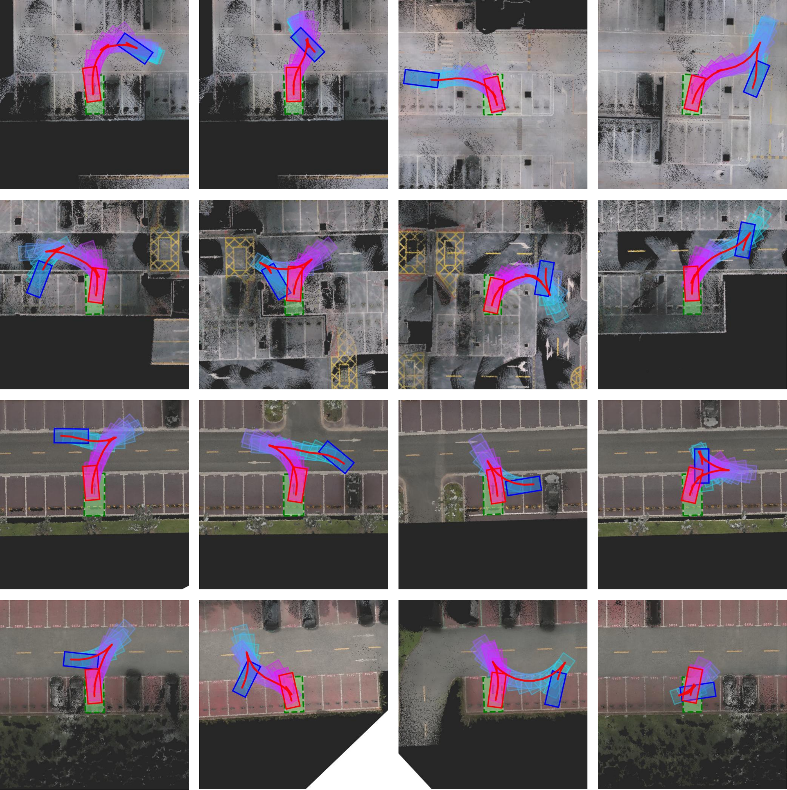
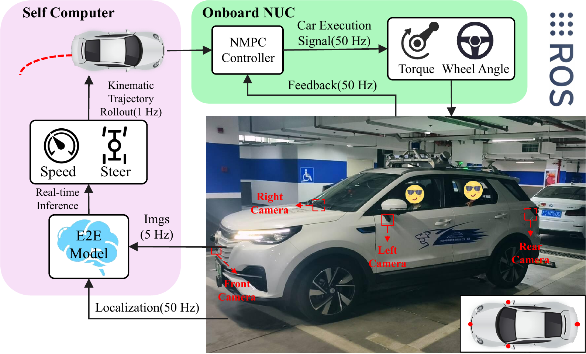

3DGS Simulation + Corrective Experience + End-to-End RL
ParkingWorld
End-to-End Autonomous Parking Reinforcement Learning from Corrective Experience in 3DGS Simulation
Simulation PSR
Real-Vehicle PSR
Standard Slots
What It Solves
Learning to park from corrected mistakes
ParkingWorld trains an end-to-end autonomous parking policy inside photorealistic 3D Gaussian Splatting parking scenes. Instead of relying only on ordinary RL rollouts or large expert datasets, the system couples what the autonomous policy did wrong with how humans corrected the failure. This correction-in-the-loop replay design makes training more sample-efficient, safer, and more transferable to real vehicles.
Framework
Closed-loop training inside reconstructed parking worlds

CIL-SERL
Correction-in-the-loop sample-efficient RL
Human interventions are not simply mixed into a single demonstration buffer. ParkingWorld stores normal RL rollouts, human takeover segments, failed autonomous trajectories, and corrected rollback segments in coupled replay buffers. The policy therefore learns both the failure context and the corresponding recovery behavior.

Why 3DGS
Less domain gap, richer interaction

Simulation Experiment
Strong closed-loop performance on standard slots
Training and testing are conducted on five reconstructed 3DGS parking scenes containing 239 standard parking slots. Each method is evaluated over 200 trials.
| Type | Method | PSR (%) ↑ | PCR (%) ↓ | PTR (%) ↓ | PBR (%) ↓ | NGS ↓ |
|---|---|---|---|---|---|---|
| Rule-based | RS Curve | 31.0 | 0.0 | 69.0 | 0.0 | 1.6 |
| Rule-based | Hybrid A* | 55.5 | 0.0 | 45.5 | 0.0 | 14.9 |
| End-to-end | ParkingE2E | 34.0 | 46.5 | 0.0 | 19.5 | 2.6 |
| End-to-end | REAP-PPO | 46.0 | 39.0 | 15.0 | 3.0 | 26.7 |
| End-to-end | REAP-SAC | 68.5 | 22.0 | 9.5 | 0.0 | 17.5 |
| End-to-end | ParkingWorld | 88.0 | 4.0 | 8.0 | 0.0 | 13.2 |

Real-World Experiment
Deployed on a Changan CS55
Four surround-view fisheye cameras stream images at 5 Hz to a dedicated computer, where ParkingWorld predicts target speed and steering commands. The commands are rolled out into a short-horizon kinematic trajectory and tracked by an onboard NUC using sampled NMPC at 50 Hz.

Real-Vehicle Comparison
Robust transfer beyond simulation
| Type | Method | PSR (%) ↑ | PCR (%) ↓ | PTR (%) ↓ | PBR (%) ↓ | NGS ↓ |
|---|---|---|---|---|---|---|
| Rule-based | RS Curve | 15.0 | 0.0 | 85.0 | 0.0 | 6.5 |
| Rule-based | Hybrid A* | 35.0 | 0.0 | 65.0 | 0.0 | 29.7 |
| End-to-end | ParkingE2E | 30.0 | 45.0 | 0.0 | 25.0 | 8.5 |
| End-to-end | REAP-PPO | 40.0 | 2.0 | 35.0 | 5.0 | 33.8 |
| End-to-end | REAP-SAC | 60.0 | 15.0 | 25.0 | 0.0 | 26.6 |
| End-to-end | ParkingWorld | 80.0 | 5.0 | 15.0 | 0.0 | 22.1 |
Citation
BibTeX
@article{parkingworld2026,
title = {ParkingWorld: End-to-End Autonomous Parking Reinforcement Learning from Corrective Experience in 3DGS Simulation},
author = {Yu, Zhengcheng and Li, Changze and Liu, Haoran and Qin, Tong},
journal = {IEEE Robotics and Automation Letters},
year = {2026}
}First Author Contact
Zhengcheng Yu
For questions about ParkingWorld, collaboration, or implementation details, feel free to reach out through the following platforms.